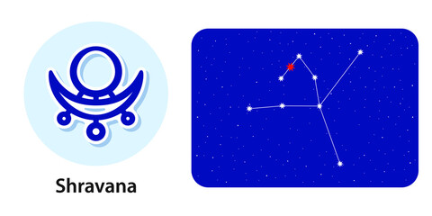

<
1st Pada: The first pada of the Shravana Nakshatra falls in the Aries Navamsa ruled by Mars. The planetary influences here focus on cultivating logic, ambition, and initiative.
2nd Pada: The second pada of the Shravana Nakshatra falls in the Taurus Navamsa ruled by Venus. The natives here are diplomatic, and the focus is on music and the entertainment industry.
3rd Pada: The third pada of the Shravana Nakshatra falls in the Gemini Navamsa ruled by Mercury. The focus here is on the best aspects of Shravana, which is communication and a wish to expand knowledge.
th Pada: The fourth pada of the Shravana Nakshatra falls in the Cancer Navamsa ruled by the Moon. The focus here is on being sympathetic and receptive. These natives are likely to hold public offices or jobs in the hotel industry.
Sravana α, β and γ Aquilae
Lord: Chandra (Moon)
Symbol : Ear or Three Footprints
Deity : Vishnu, preserver of universe
Stone: Pearl is your lucky stone.
Lucky numbers : 2 and 8
Lucky Day: Monday, Wednesday and Thursday
If a baby born in this nakshatra give her or him a name with starting letter “J” or “Ch”.
These persons should not live in South facing houses.
Persons born in Sravana nakshatram will have good taarabalam with following nakshatrams:
Mrigasira, Punarvasu, Aslesha, Pubba, Uttara, Chitta, Visakha, Jyesta, Purvashada, Uttarashada, Dhanishta, Purvabhadra, Revati, Bharani, Kritika.
Indian zodiac: 10° – 23°20′ Makara
Western zodiac 6° – 19°20′ Aquarius
Shravana Nakshatra
Characteristics male
The Male native of the Shravana Nakshatra is soft-spoken and methodical in his work. He has his set of values in life and always follows them. One of them is maintaining neatness and cleanliness in his surroundings. He is compassionate and likes to help those who are in need. He does not expect anything when he is helping someone, but instead of getting rewarded for his good deeds, he only gets played. He is also conscious of the food that he eats. He is a believer in God and his guru (spiritual teacher). He will face many ups and downs in his life and will tend to spend most of his career at the middle level. However, he is well matured and loves to learn new things all the time.Profession male
The Male native of the Shravana Nakshatra will have to face a lot of change till the age of 30, after which till 45 he will be relatively stable, but it is after 65 that he will experience progress on the economic and social fronts. This native is ideally suited for mechanical or technical work related to engineering. It is also possible that he may be connected to petroleum or oil goods.Compatibility male
The Male native of the Shravana Nakshatra will have a very happy married life. His wife will possess all the good qualities of a housewife and will take very good care of him. And, even though she gives him enough sexual satisfaction, the Male native of this Nakshatra is bound to have an occasional fling outside marriage.Health male
The health of the Male native of the Shravana Nakshatra could suffer from problems in the ear, skin disease, tuberculosis, and problems in his digestive system.Characteristics female
The Female native of the Shravana Nakshatra has a charitable nature. This native is also very religious and undertakes many pilgrimages. She has compassion and generosity both but likes to show them off so that she will ensure that people around her know of her charitable works and the funds she has donated. She is very talkative, and can not hide anything, especially from her husband.Profession female
The Female native of the Shravana Nakshatra is likely to be uneducated and therefore will have to take up, if necessary, menial jobs. However, she is a very fine exponent of the fine arts, especially, she makes a very good dancer.Compatibility female
The Female native of the Shravana Nakshatra makes her family happy. This native seeks perfection in everything she does and expects the same from everyone else. She has to understand that everyone can’t be as perfect as her. This perfectionist attitude, however, does not apply to her husband, on whom she showers a lot of love and caring, and who, to her, is a real gentleman.Health female
The health of the Female native of the Shravana Nakshatra is likely to get some skin disease at some stage of her life. She may be vulnerable to eczema, tuberculosis, and even leprosy.Shravana Nakshatra Padas
1st Pada: The first pada of the Shravana Nakshatra falls in the Aries Navamsa ruled by Mars. The planetary influences here focus on cultivating logic, ambition, and initiative.
2nd Pada: The second pada of the Shravana Nakshatra falls in the Taurus Navamsa ruled by Venus. The natives here are diplomatic, and the focus is on music and the entertainment industry.
3rd Pada: The third pada of the Shravana Nakshatra falls in the Gemini Navamsa ruled by Mercury. The focus here is on the best aspects of Shravana, which is communication and a wish to expand knowledge.
th Pada: The fourth pada of the Shravana Nakshatra falls in the Cancer Navamsa ruled by the Moon. The focus here is on being sympathetic and receptive. These natives are likely to hold public offices or jobs in the hotel industry.